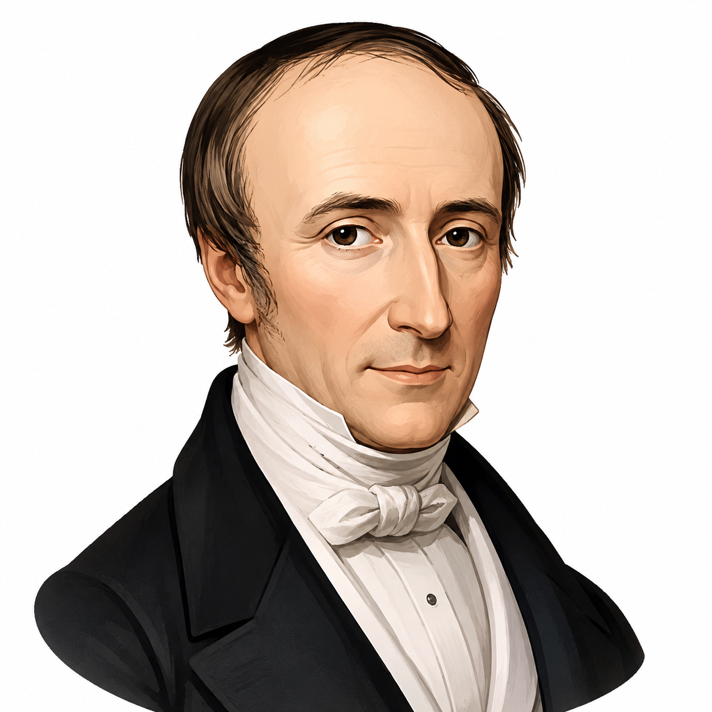
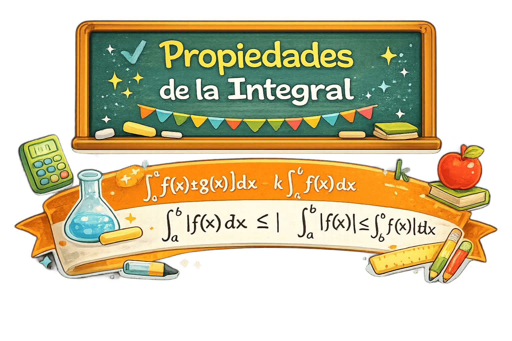

Laboratorio de Sumas de Riemann
Rectángulos
n = 16
Aproximación
0.00000
Área exacta
0.00000
Error
0.00%
Toca cualquiera de las tres tarjetas para ver de dónde sale ese número.
Estaciones del Conocimiento
Estación I
Las Sumas de Riemann
Dividir e iterar el área en intervalos finitos.
B. Riemann · 1826–1866
Estación II

Concepto de Integral Definida
El límite infinitesimal cuando el ancho tiende a cero.
A.-L. Cauchy · 1789–1857
Estación III

Propiedades de la Integral
Linealidad, aditividad, inversión y monotonía.
Leyes algebraicas
Estación IV

Teorema Fundamental del Cálculo
El puente entre la derivada y la integral.
Newton & Leibniz · s. XVII
Referencias
01Larson, R., & Edwards, B. H. (2016). Cálculo Tomo I (10.ª ed.). Cengage Learning.
02Stewart, J. (2018). Cálculo de una variable: Trascendentes tempranas (8.ª ed.). Cengage Learning.
03Thomas, G. B., Weir, M. D., & Hass, J. (2015). Cálculo: Una variable (13.ª ed.). Pearson Educación.
04Spivak, M. (2012). Cálculo Infinitesimal (2.ª ed.). Editorial Reverté.
05OpenStax. (2023). Cálculo volumen 1 — 5.2 La integral definida. openstax.org
06LibreTexts en Español. 5.3: Sumas de Riemann (APEX Calculus). espanol.libretexts.org